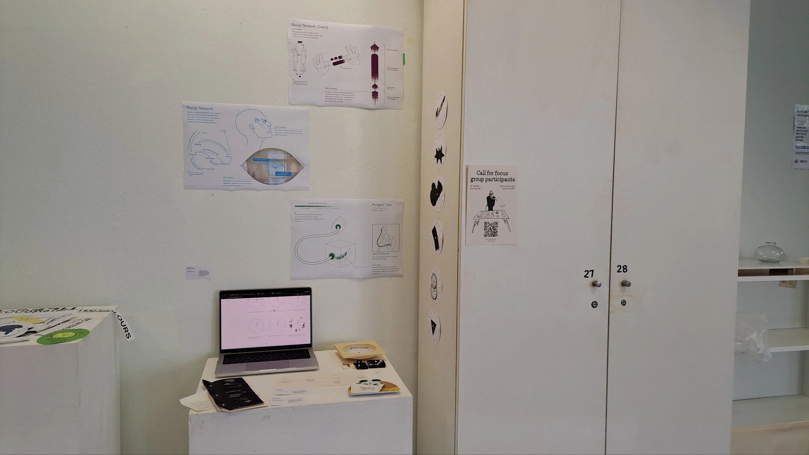
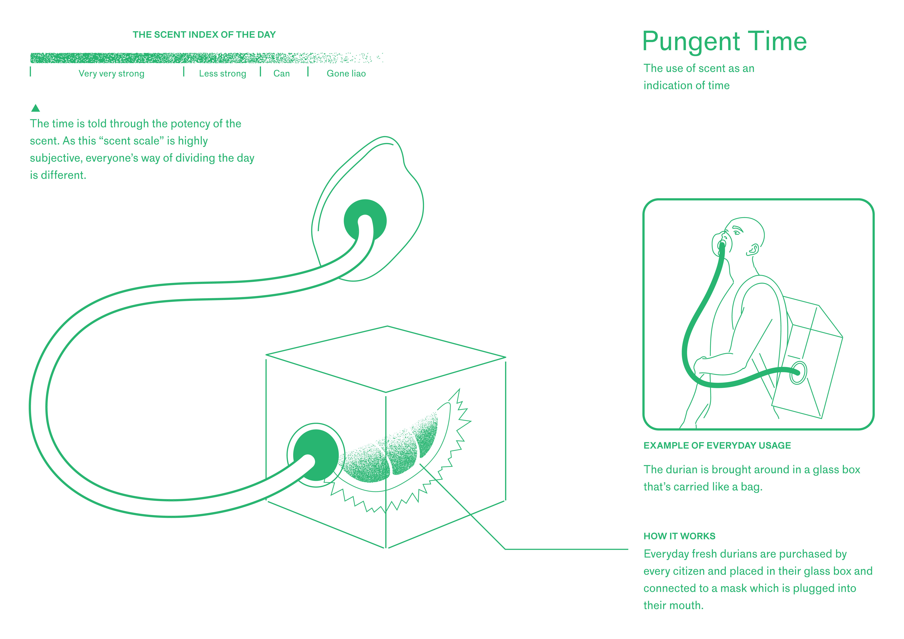
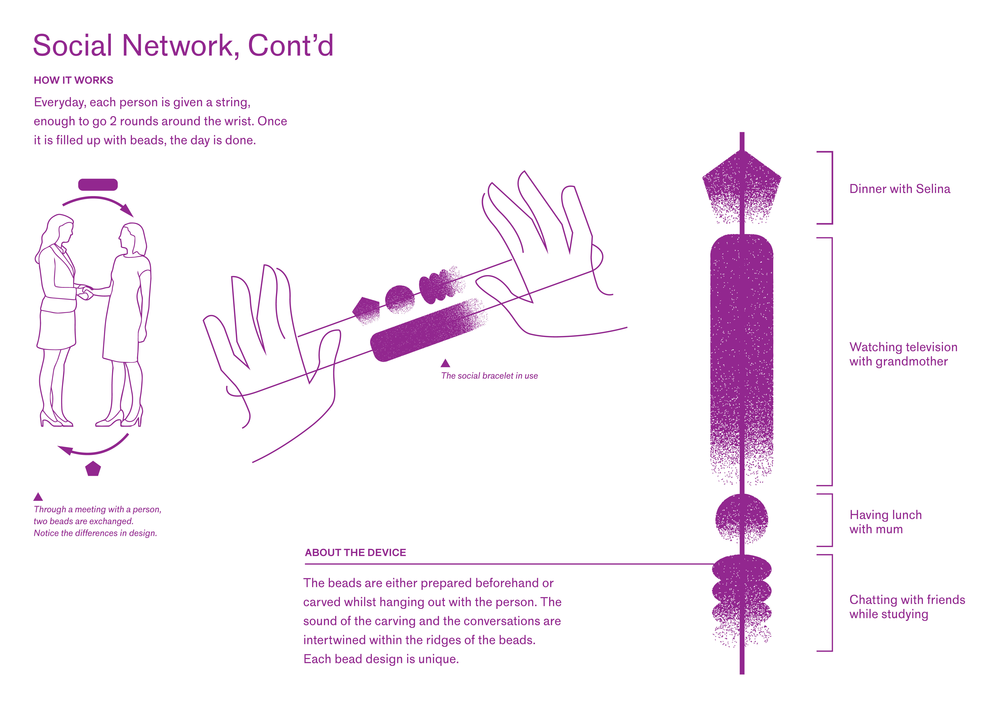
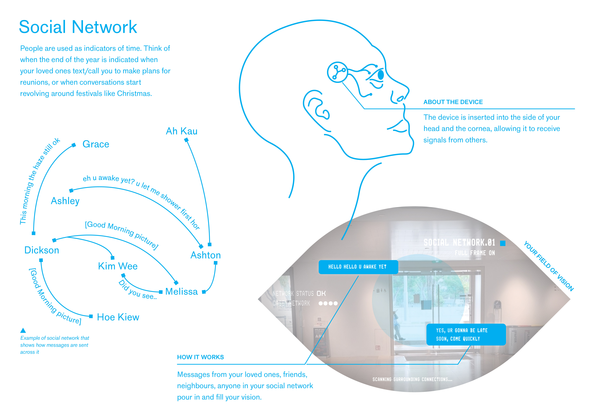

The one with a lot of speculation, devices, objects, clocks

Research Diagram

Continuation of speculative devices
This was pretty last minute; done for the showcase on Wednesday. I did some diagram sketches for my prototypes.

Durian as a clock

Social network as a clock

Social network as a clock, pt.2
Set-up for grad project showcase
My humble set-up
I wanted to include the worksheets as well, but I think that would be too ambitious as I was running out of time (sigh, the effects of social acceleration!).
The feedback that I received was that the ideas that I had so far contained many loopholes, and may be hard to understand and parse. As for the illustrations, it was clear and acceptable, perhaps could be used for the co-design activities later on (which is good! But i think I'll try my best to photoshop my devices). Also, I definitely needed to explore more.
Reflection of the week
Overall, I think this week had some good progress, especially in terms of my dissertation. I'm glad that I have managed to come up with a solid plan for my focus groups and workshops (will be booking the rooms soon!) and I feel more confident about my approach. Looking back to the start of this project, I truly did not anticipate taking a speculative approach, as I was more focused on cultural temporal devices. So this has taken an unexpected turn! Though not entirely undesirable. In Year 2 while doing my urban fieldworks project, our group briefly delved into this branch of design, which made me curious about it. Hopefully all turns out well! I'm honestly nervous about the focus groups. I do foresee some late nights. But I think all will be okay. #manifest